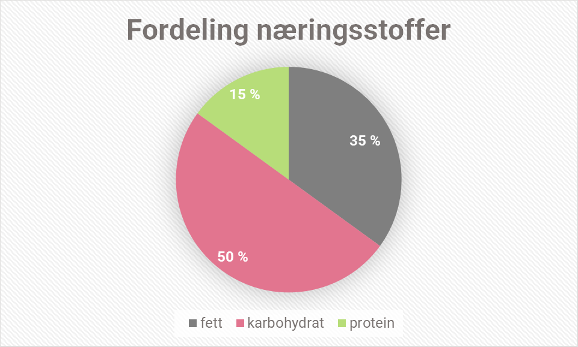

Næringsinnholdet i leverpotet er helt perfekt i følge helsemyndighetene. De anbefaler 50% karbohydrat, 35% fett og 15% protein. Den formelen følger leverpotet helt perfekt.
Karbohydrat - 399g - 49,9061914%
Protein - 120,5g - 15,0719199%
Fett - 280g - 35,0218887%
Vitaminer, mineraler og sporstoffer for de som er spessielt intereserte.
Søtpotet - 100g
Mono+Di saccharides - 4.2g
Beta-carotene - 6608µg
Vitamin E - 0.3mg-ATE
Vitamin A - 551µg-RE
Vitamin B - 60.21mg
Riboflavin - 0.06mg
Phosphorus - 47mg
Phosphorus - 47mg
Magnesium - 25mg
Potassium - 337mg
Vitamin B - 120µg
Thiamin - 0.08mg
Copper - 0.15mg
Dietary fibre - 3g
Vitamin C - 2mg
Calcium - 30mg
Sodium - 55mg
Selenium - 1µg
Niacin - 0.6mg
Starch - 12.7g
Folate - 11µg
Zinc - 0.3mg
Iron - 0.6mg
Iodine - 2µg
Salt - 0.1g
Torskelever - 100g
Vitamin A - 4794µg-RE
Vitamin E - 5.2mg-ATE
Phosphorus - 138mg
Vitamin B6 - 0.09mg
Potassium - 156mg
Vitamin B12 - 43µg
Vitamin D - 89.7µg
Riboflavin - 0.3mg
Magnesium - 9mg
Thiamin - 0.11mg
Retinol - 4794µg
Selenium - 80µg
Copper - 0.4mg
Sodium - 48mg
Iodine - 355µg
Niacin - 2.2mg
Folate - 107µg
Calcium - 5mg
Zinc - 1.2mg
Iron - 1.7mg
Salt - 0.1g
Cashewnøtter - 100g
Vitamin E - 0.9mg-ATE
Phosphorus - 593mg
Magnesium - 292mg
Vitamin B6 - 0.42mg
Riboflavin - 0.06mg
Potassium - 660mg
Thiamin - 0.42mg
Vitamin C - 1mg
Copper - 2.2mg
Calcium - 37mg
Sodium - 12mg
Selenium - 2µg
Niacin - 1.1mg
Iodine - 11µg
Folate - 25µg
Zinc - 5.8mg
Iron - 6.7mg